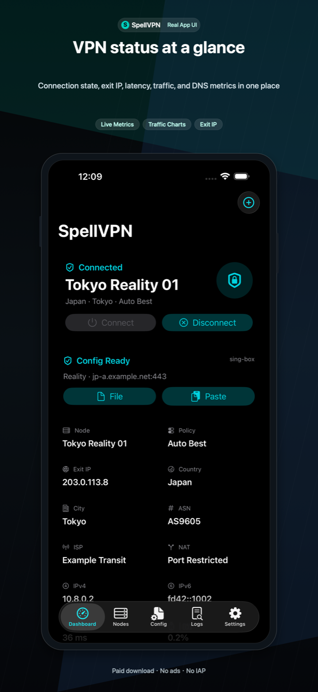
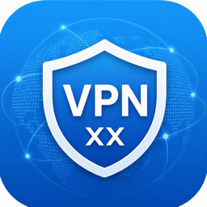

官方应用网站
为 Apple 应用准备清晰的支持与隐私页面。
本站汇总已上架应用和正在准备提交 App Store 审核应用的产品页、支持入口和隐私政策。


应用
每个应用都有独立的产品页、支持页和隐私政策页，方便在 App Store Connect 中填写准确的审核链接。

SpellVPN
适用于 iPhone、iPad 和 Mac 的 VPN 配置客户端。Ultra 是 iOS 免费版；同一个付费 App Store 条目同时覆盖 iOS 付费版和 Mac 付费版，Mac 版通过原生 macOS Packet Tunnel 连接。

VPN XX
代理订阅与节点管理工具，支持代理链接、扫码导入、iCloud 同步、收藏和端点测速。

ArtCut
本地优先的视频剪辑 App，提供付费无广告版和免费广告版，支持时间线拼接、字幕、叠加、音频和导出。
好记 / easyTallys
本地优先的记账与共享账本 App，已按“好记”上架名称更新，支持预算、报表、Widget、iCloud 同步和本机冷钱包保险箱。
使用教程
教程按每个 App 拆分，说明核心流程、权限用途、版本差异和本地数据处理方式。
Roogoo 开卡与美国 App Store 支付
使用邀请码 vtqst0 注册，了解新用户首卡和 7 天 0 费率活动，完成充值、绑定美国 Apple Account 与购买付费 App。
注册美国 Apple Account 小白教程
按 2026 年 Apple 官方流程注册或切换美国区，了解 None、美国 IP 和测试地址助手，并下载 SpellVPN。
SpellVPN 小白一键搭建
从 SSH 登录开始，一键部署无需域名的 VLESS Reality 和 Shadowsocks，复制分享链接即可导入 SpellVPN。
SpellVPN 使用教程
按“首页 → + → 导入 → 节点 → 连接”的真实路径操作，并处理订阅更新、DNS、Ping、诊断和“已连接但无流量”的问题。
VPN XX 使用教程
使用 VPN XX 导入、刷新、整理、同步、分享和测试用户提供的代理订阅 URL 与节点信息。
ArtCut 使用教程
创建本地视频项目，在时间线上剪辑片段、添加字幕和叠加层、调整音频，并导出成片。
好记 / easyTallys 使用教程
设置账本和账户、使用票据 OCR 记录流水、查看预算与报表、追踪周期账单、使用 Widget 与 Watch 快捷记账，并保护本地财务数据。
隐私政策链接
每个 App Store 条目建议使用对应应用的隐私政策 URL。页面内容已按当前项目行为拆分。
支持
面向 App Review 和用户，每个支持页都包含联系方式、常见问题和产品边界说明。
适合送审的结构
整站为纯静态 HTML，可部署到 GitHub Pages、Cloudflare Pages、Netlify、Vercel、S3 或任意 HTTPS 静态托管。
按应用拆分政策
VPN、广告、iCloud、视频媒体、语音识别和财务数据分别写在对应应用中，避免审核资料互相冲突。
联系方式
支持邮箱为 balamanigill@gmail.com，用于用户支持、隐私问题和 App Review 后续沟通。